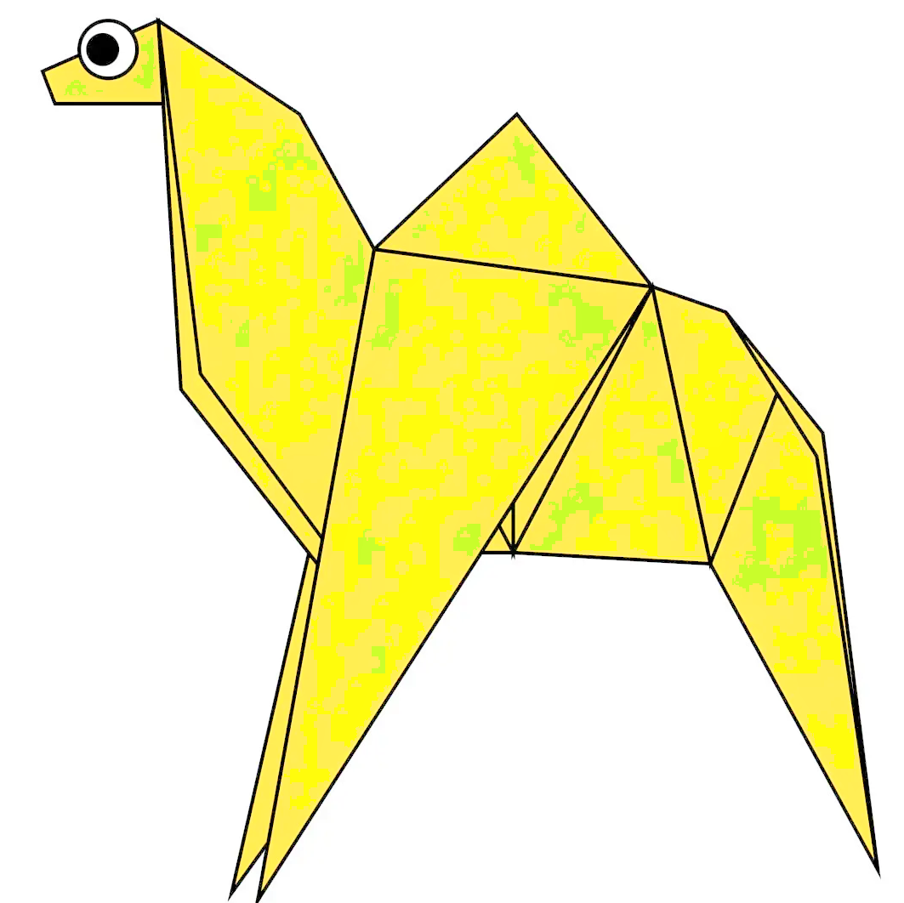
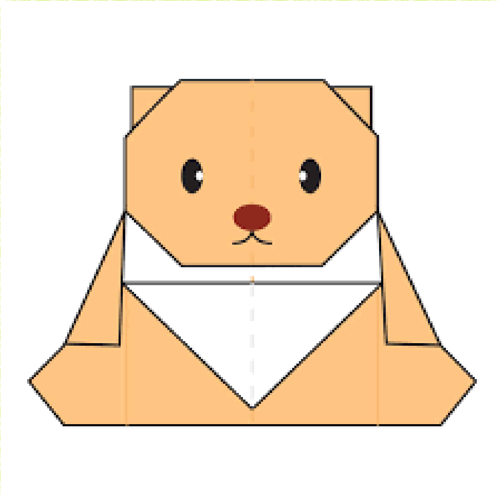
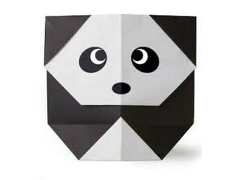

Origami Designs
Chamel

#interesting facts about camel-
1. Camel's esrs are furry.
2. Camel can move easily across the sand because of its specially designed feet.
3. They can drink gallons of water.
Chemeleon

#interesting facts about chameleon-
1.chameleons are reptiles that are part of the iguana suborder.
2. Changing skin color is an important part of communication among chameleon.
3. Most chameleons have a peshenensile tail that they use to wrap around tree branches.
Pigeon

#interesting facts about pigeons-
1.Pigeons are incredibly complex and intelligent animals.
2.Pigeons are highly sociable animals.
3.Pigeons are renowned for their outstanding navigational abilities.
teddy-bear

#interesting facts about teddy-bear-
1.Morris Michtom created the teddy bear.
2.The word or name 'teddy bear' comes from the nickname of Theodore Roosevelt.
3.Before teddy bears could be sold, Michtom had to get President Roosevelt's permission to use his name.
Panda

#interesting facts about Panda-
1.They have great camouflage for their environment.
2.Their eyes are different to normal bears.
3.Cubs are well protected in their first month.
4.Courageous cubs!
5.A helping hand.
6.They spend a lot of their day eating.
Flying Cicada

#interesting facts about Flying Cicada-
1.Cicadas can survive a huge fall as babies, or nymphs.
2.The loud whirring or buzzing sound you hear is an all-male cicada chorus.
3.They're true bugs,Most have red-orange eyes.
4.Females may be attracted to the sound of motors.
5.Their short adult life is not unusual for bugs.
end
About Us
Follow Us